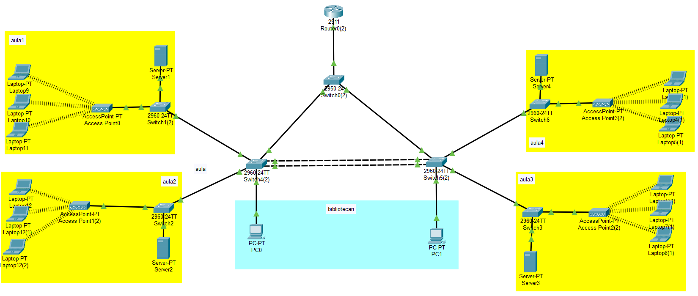
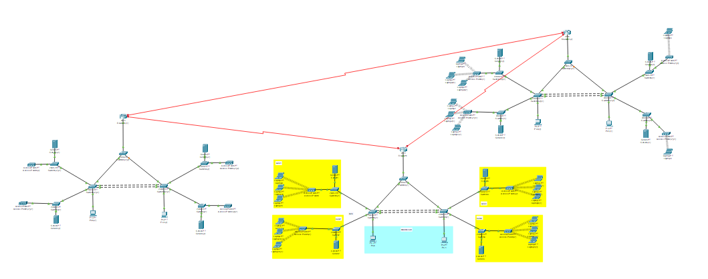
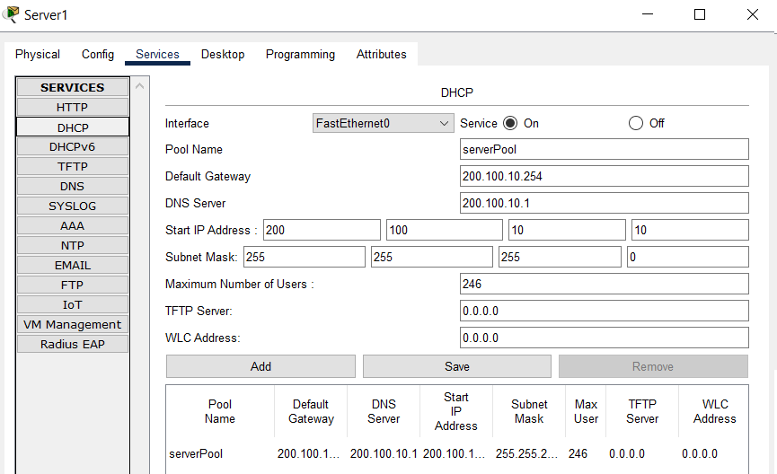
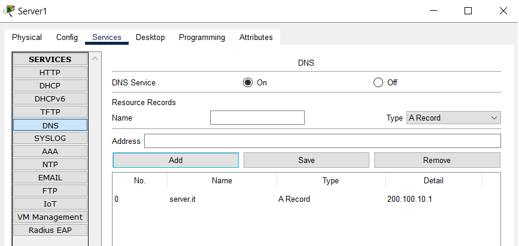
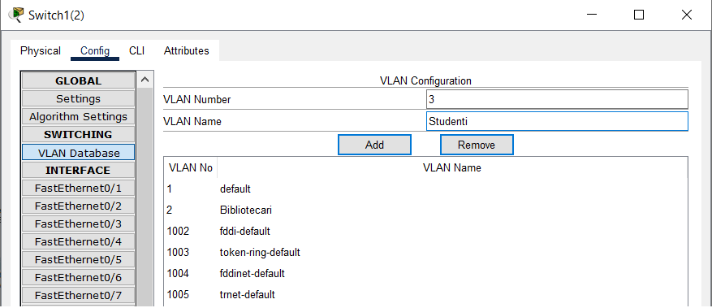

bibliopt
Progetto di Francesco Orlandi
Questo file Packet Tracer rappresenta tre reti di biblioteche universitarie. Ogni rete è divisa in VLAN per studenti e bibliotecari. Ogni aula studio include un server che funge da DNS/DHCP. Gli switch sono collegati con EtherChannel su cavi ethernet cross-over per migliorare la velocità di connessione tra access point distanti. Il routing dinamico sui router gestisce l'instradamento dei pacchetti su collegamenti seriali.
Screenshot del progetto:
Topologia di una biblioteca.
Topologia generale delle biblioteche connesse.
Configurazione dell'assegnamento IP dinamico.
Configurazione del server DNS per la risoluzione dei nomi.
Configurazione delle VLAN per studenti e bibliotecari.

Implementazione di Spanning Tree Protocol per evitare loop.
Configurazione di EtherChannel per creare ridondanza e aumentare la velocità tra gli switch più distanti.

Implementazione del routing dinamico tra i router.